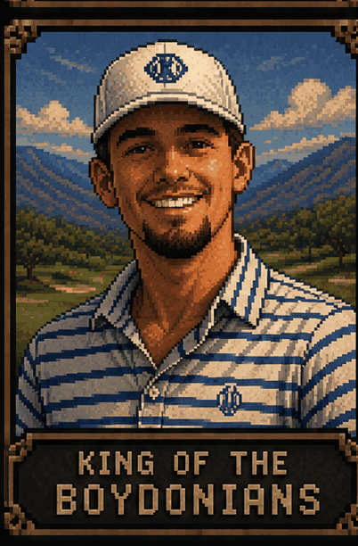
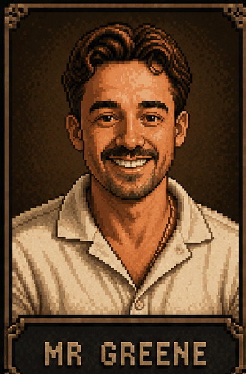
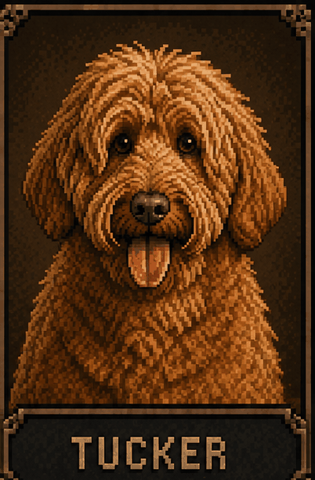
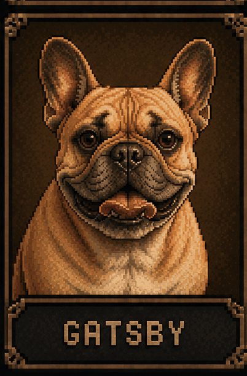
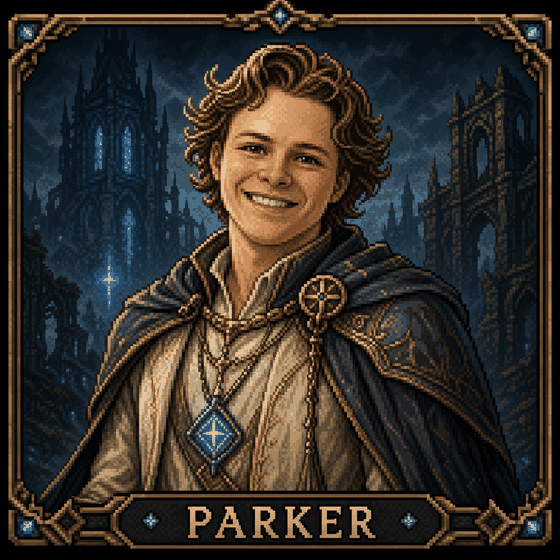

Landing Page Secrets
Two ways to unlock pixel portrait cards on the marketing site.
Method 1 — Type a Name

Landry
landon · landry

Conner
boyd · conner

Mr Greene
greene · austin

Tucker
tucker

Gatsby
gatsby · hounds

Parker
parker · shepherd
| Method | How |
|---|---|
| keyboard | Type any trigger word from the grid above — anywhere on the page, no focus needed. |
| ◈ footer | Click the faint ◈ symbol on the right side of the footer copyright line. Cycles through all six cards in order. |
Dismiss any card with Esc or by clicking outside it.